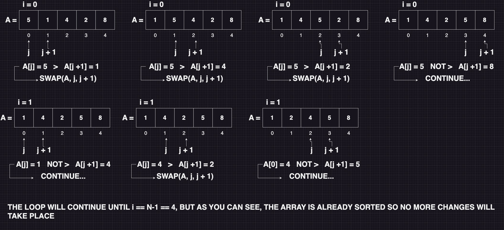
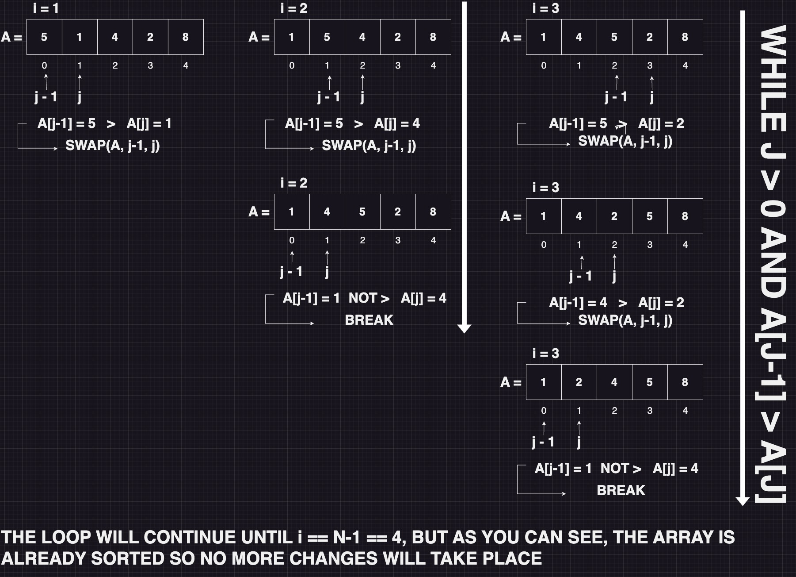
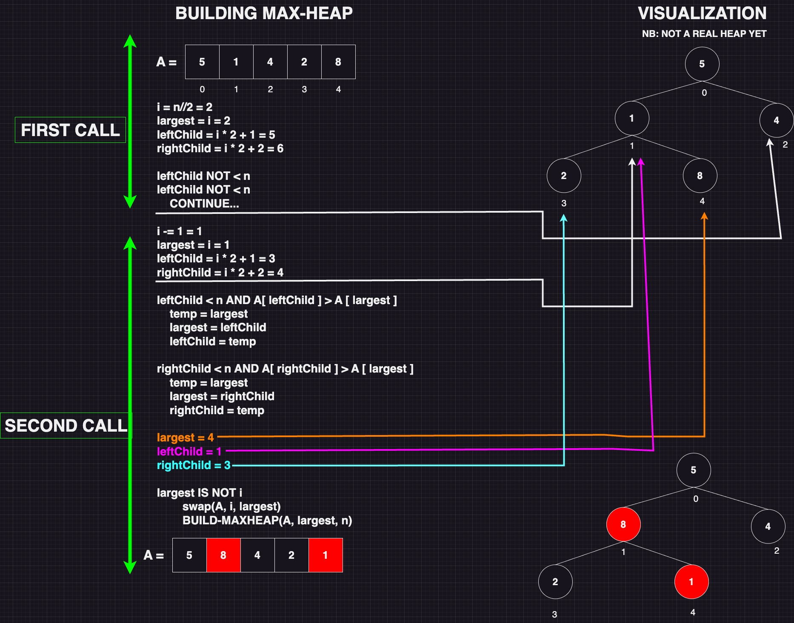

Bubble sort O(n^2):
The Bubble Sort algorithm takes an input array A and gives an output of a sorted array (in ascending or descending order). The way Bubble Sort works is that, it compares itself with the element to its right and constantly selects the element with the highest value (in this case ascending order) and moves it towards the right. If it encounters another element with a higher value, it swaps with the current element and brings along the new element with the higher value. This means that after the first iteration of the inner loop, the element with the highest value will be the last element in the array. After the next iteration, the element with the second highest or equal value will be second to last, and so on. With each iteration, the array gets sorted from the end, which is why we iterate over a smaller portion each time.
As shown in the code, Bubble Sort uses two for-loops to sort an array. The outer for-loop runs n-1 times, where n represents the number of elements in the array. The inner for-loop runs n-1-i times, and the reason for this is that during the first iteration, i is equal to zero, so it goes through the entire array and checks if the element it is on has a higher value than the element to its right. If this is the case, it swaps their positions. It continues to do this, which means that after the first iteration, it has encountered the element with the highest value and pushed it back in the list, unless it was already at the end. Now that the element with the highest value is at the end of the list, we know there is no need to loop over it in the next iteration. Therefore, the inner loop runs n-1-i times because, every time it exits the inner loop, a new element has been placed at the end of the list where it belongs, and we don't need to loop over what has already been sorted.
CLICK HERE FOR CODE IMPLEMENTATION
# PYTHON-IMPLEMENTATION
def swap(A, i , j):
A[i], A[j] = A[j], A[i]
def bubbleSort(A):
n = len(A)
for i in range(n-1):
for j in range(n-1-i):
if A[j] > A[j + 1]:
swap(A, j, j + 1)
return A
// JAVA-IMPLEMENTATION
public static int[] BubbleSort(int[] A) {
int n = A.length;
for (int i = 0; i < n-1; i++) {
for (int j = 0; j < (n-i-1); j++) {
if (A[j] > A[j +1]) {
int left = A[j];
A[j] = A[j+1];
A[j+1] = left;
}
}
}
return A;
}
Insertion sort O(n^2):
Insertion Sort is a simple sorting algorithm that works by repeatedly inserting elements from an unsorted portion of the array into their correct position within a sorted portion of the array. The algorithm starts with the assumption that the first element in the array is already sorted. It then iterates through the remaining elements, one at a time, and inserts each element into its correct position within the sorted portion of the array.
As you can see in the code, we have a for loop that runs from 1 to n. The first thing that happens is that we initialize a variable 'j' to be 'i'. Then we have an inner while loop that runs as long as j is greater than 0 AND as long as the element at position j-1 in the array is greater than the element at position j. For each iteration in the for loop, we are essentially working our way backwards in the array and ensuring that everything backward is sorted.
CLICK HERE FOR CODE IMPLEMENTATION
# PYTHON-IMPLEMENTATION
def swap(A, i , j):
A[i], A[j] = A[j], A[i]
def insertionSort(A):
n = len(A)
for i in range(1, n):
j = i
while j > 0 and A[j-1] > A[j]:
swap(A, j, j-1)
j -= 1
return A
// JAVA-IMPLEMENTATION
public static int[] InsertionSort(int[] A) {
int n = A.length;
for (int i = 1; i < n; i++) {
int j = i;
while (j > 0 && A[j-1] > A[j]) {
int left = A[j-1];
A[j-1] = A[j];
A[j] = left;
j--;
}
}
return A;
}
Selection sort O(n^2):
Selection Sort is a sorting algorithm that works by selecting the
smallest item from an unsorted list and moving it to the beginning of
the list. Here's how the algorithm works:
1. Find the
smallest item in the unsorted part of the list
2. Swap it with the first item in the list
3. Move the boundary between the unsorted and sorted parts of
the list one item to the right
4. Repeat until the entire list
is sorted
The algorithm starts by treating the whole list as unsorted, and the
sorted part is initially empty. It then finds the smallest item in the
unsorted part of the list and swaps it with the first item in the
list. This places the smallest item at the beginning of the list,
making it a part of the sorted list. Then, the boundary between the
sorted and unsorted parts of the list is moved one item to the right,
so the next smallest item is found in the unsorted part of the list,
and so on. This process continues until the entire list is sorted.
As you can see in the code, selection sort uses two for loops. The outer for loop runs n-1 times, and for each iteration, it saves the value of 'i' in a new variable 'k'. Then, it sets the value of 'j' to be 'i'+1. Then, the inner for loop starts, running from j up to n. For each iteration of this inner loop, it compares the value of the element at position k to the element at position j in the array. As the loop runs from j to n, it will find the smallest element in the array from where it starts to the end. Every time it finds an element smaller than the one at position k, it swaps the value of k to now be the value of j (this will be the index where it found a smaller element). When the inner for loop is finished, we check if the value of k has changed from being the same as the value of i. If this is the case, it means that the inner for loop has found a smaller element than the one we started with, which k now has the index of, so we swap the position of the element at position i with the element at position k. This actually means that the first iteration of the inner loop will find the smallest element in the array unless it's already the first element. The second iteration will find the next smallest element, again unless it's already at the correct place in the array. This will then continue for out the lenght of the array.
CLICK HERE FOR CODE IMPLEMENTATION
# PYTHON-IMPLEMENTATION
def swap(A, i , j):
A[i], A[j] = A[j], A[i]
def selectionSort(A):
n = len(A)
for i in range(n):
k = i
for j in range(i + 1, n):
if A[j] < A[k]:
k = j
if k != i:
swap(A, k, i)
return A
// JAVA-IMPLEMENTATION
public static int[] SelectionSort(int[] A) {
int n = A.length;
for (int i = 0; i < n; i++) {
int k = i;
for (int j = i + 1; j < n; j++) {
if (A[j] < A[k]) {
k = j;
}
}
if (i != k) {
int k_value = A[k];
A[k] = A[i];
A[i] = k_value;
}
}
return A;
}
Merge sort O(n(log(n))):
Merge Sort is a divide-and-conquer sorting algorithm that works by
dividing an unsorted list into smaller sub-lists, sorting those
sub-lists, and then merging them back together to create a sorted
list. Here's how the algorithm works:
1. Divide the unsorted list into n sub-lists, each
containing one element (list of one element is considered sorted)
2.Repeatedly merge sub-lists to produce new sorted sub-lists
until there is only one sub-list remaining
To merge two sorted sub-lists, you compare the first element of each
sub-list and place the smallest element in a new list. Then you repeat
this process until one of the sub-lists runs out of elements, at which
point you add the remaining elements of the other sub-list to the new
list. This process works recursively until all sub-lists have been
merged into a fully sorted list.
CLICK HERE FOR CODE IMPLEMENTATION
# PYTHON-IMPLEMENTATION
def merge(A, A1, A2):
i = 0
j = 0
while i < len(A1) and j < len(A2):
if A1[i] <= A2[j]:
A[i + j] = A1[i]
i += 1
else:
A[i + j] = A2[j]
j += 1
while i < len(A1):
A[i + j] = A1[i]
i += 1
while j < len(A2):
A[i + j] = A2[j]
j += 1
return A
def mergeSort(A):
n = len(A)
if n <= 1:
return A
i = n//2
leftPartOfArray = A[:i]
rightPartOfArray = A[i:]
A1 = mergeSort(leftPartOfArray)
A2 = mergeSort(rightPartOfArray)
return merge(A, A1, A2)
// JAVA-IMPLEMENTATION
public static int[] Merge(int[] A1, int[] A2) {
int[] A = new int[A1.lenght + A2.lenght];
int i = 0;
int j = 0;
while (i < A1.lenght && j < A2.lenght) {
if (A1[i] <= A2[j]) {
A[i+j] = A1[i];
i++;
}
else {
A[i+j] = A2[j];
j++;
}
}
while (i < A1.lenght) {
A[i+j] = A1[i];
i++;
}
while (j < A2.lenght) {
A[i+j] = A2[j];
j++;
}
return A;
}
public static int[] MergeSort(int[] A) {
int n = A.length;
if (n <= 1) {
return A;
}
int i = n/2;
int[] venstre = Arrays.copyOfRange(A, 0, i);
int[] hoyre = Arrays.copyOfRange(A, i, n);
int[] A1, A2;
A1 = MergeSort(venstre);
A2 = MergeSort(hoyre);
return Merge(A1, A2);
}
Quick sort O(n(log(n))):
Quick Sort is a fast, in-place sorting algorithm that uses a
divide-and-conquer strategy to sort a given array. It works by
selecting a pivot element in the array and partitioning the other
elements into smaller or larger values than the pivot. The process is
then performed recursively on the subarrays until the array is fully
sorted. Here is an explanation of the process:
1. Choose a pivot element from the array. Common methods
for choosing a pivot element include selecting the first, last, or
middle element in the array. We will choose the first.
2.
Partition the other elements in the array into two subarrays,
according to whether they are smaller or larger than the pivot
element.
3. Recursively apply the above two steps to the
subarrays on either side of the pivot element.
4. After
the recursive partitions, the array will be sorted in place.
In order to partition the array, we use two variables, left and right,
to keep track of the ends of each subarray. We start left at the
beginning of the array and traverse the array until we find an element
greater than or equal to the pivot. Similarly, we start right at the
end of the array and traverse backwards until we find an element
smaller than or equal to the pivot. Then, we swap the two elements,
and continue the process until left and right pass each other.
Finally, we swap the element at position left with element on position
high (the original pivot element we put at position high in the start
of the method). The we return left wich now is the position of the
original pivot element.
CLICK HERE FOR CODE IMPLEMENTATION
# PYTHON-IMPLEMENTATION
def swap(A, i, j):
A[i], A[j] = A[j], A[i]
def partition(A, low, high):
p = low
swap(A, p, high)
pivot = A[high]
left = low
right = high - 1
while left <= right:
while left <= right and A[left] < pivot:
left += 1
while right >= left and A[right] > pivot:
right -= 1
if left < right:
swap(A, left, right)
swap(A, left, high)
return left
def quickSort(A, low, high):
if low >= high:
return A
p = partition(A, low, high)
quickSort(A, low, p-1)
quickSort(A, p+1, high)
return A
Heap sort O(n(log(n))):
Heapsort is an efficient sorting algorithm that makes use of the heap data structure. It works by first building a heap of the elements to be sorted and then repeatedly extracting the maximum element from the heap and placing it in the sorted list. The heap is constructed using either the min-heap property or the max-heap property and the sorting can be performed in ascending or descending order based on the chosen heap property. This algorithm has a time complexity of O(n log n) which makes it an efficient choice for sorting large datasets.
CLICK HERE FOR CODE IMPLEMENTATION
# PYTHON-IMPLEMENTATION
def swap(A, i, j):
A[i], A[j] = A[j], A[i]
def maxHeapify(A, i, n):
largest = i
leftChild = i * 2 + 1
rightChild = i * 2 + 2
if leftChild < n and A[leftChild] > A[largest]:
temp = largest
largest = leftChild
leftChild = temp
if rightChild < n and A[rightChild] > A[largest]:
temp = largest
largest = rightChild
rightChild = temp
if largest != i:
swap(A, i, largest)
maxHeapify(A, largest, n)
def heapSort(A):
n = len(A)
i = n//2
# RECONSTRUCTING ARRAY TO MAX-HEAP
while i >= 0:
maxHeapify(A, i, n)
i -= 1
# SWITCHING THE ELEMENT AT POSITION
# A[0] (LARGEST ELEMENT) TO THE BACK
# AND RECONSTRUCT ARRAY TO MAX-HEAP
j = n-1
while j > 0:
swap(A, 0, j)
maxHeapify(A, 0, j)
j -= 1
return A
Bucket sort O(n(log(n))):
UNDER DEVELOPMENT...
CLICK HERE FOR CODE IMPLEMENTATION
Under development...
Radix sort O(n(log(n))):
UNDER DEVELOPMENT...
CLICK HERE FOR CODE IMPLEMENTATION
Under development...